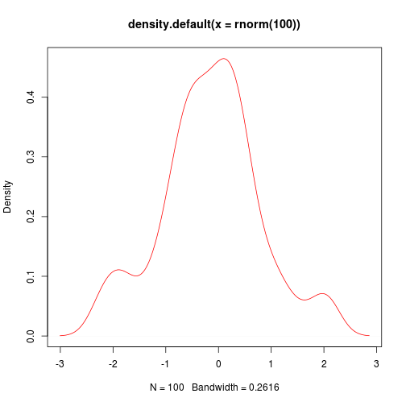

Lecture 1
- Large Data Sets
- Modeling and simulations
- Statistical analysis
- Extensive computational task
- Genomics, transcryptomycs
- Computational evolutionary biolo
- Structural biology
- Image analysis
- Quantative ecology
3 diensions of languages
- High vs low
- General vs targeted
- Interpretive vs compiled
Structure of R language
- S language
- Functions written in R itself
Specific task
- Multiple testing
- MCMC
- Bias
- Gauss
- Plotting
- Sequencing
Check graphics system
plot(density(rnorm(100)), col = "red")

Variables types
x = 5
x <- 5
assign(x, 5)
## Error: неправильный первый аргумент
x
## [1] 5
Commands and Basic Functions
function c()
x <- c(1, 3, 6, 7)
Vectors
- numerical
- character
- logical
(factors are not classic vector objects)
char <- c("8", "edge", "turn8k")
logic <- c(TRUE, FALSE, TRUE, FALSE)
Dynamic typisation
dynam <- c(8, "dds", TRUE)
dynam <- c(1, 0, 1, 1, TRUE)
dynam
## [1] 1 0 1 1 1
Priority Char->integer->Logic
Functions
x=function(arg1,arg2,...)
Invocation - function call
args:
- tagged(named)
- positional
Positional: log(x,base)
log(x, 10)
## [1] 0.0000 0.4771 0.7782 0.8451
Tagged: log(base=base,x)
log(base = 10, x)
## [1] 0.0000 0.4771 0.7782 0.8451
Logical operations
,<,<=,>=,==
x = 10
x < 5
## [1] FALSE
x > 5
## [1] TRUE
x == 10
## [1] TRUE
Math operations
+, -, *, /, ^, sin(), cos(), sqrt(), log()
x^10
## [1] 1e+10
Quiz
x = 10/(5 - 5)
x
## [1] Inf
Recycling Rule
x <- c(2, 4, 5, 3, -4, 0)
x * 5
## [1] 10 20 25 15 -20 0
y <- c(5, 3)
x * y
## [1] 10 12 25 9 -20 0
z <- c(1, 2, 3, 4)
x * z
## Warning: длина большего объекта не является произведением длины меньшего
## объекта
## [1] 2 8 15 12 -4 0
Length function
length(x)
## [1] 6
More basic functions
log(), mean(), min(), max(), sum(), prod(), abs()
x <- c(3, 4, 6, -7, 8)
mean = sum(x)/length(x)
mean
## [1] 2.8
Regular sequenses
x = 2:10
y = 5:1
z = -5:10
w = -5:-10
x
## [1] 2 3 4 5 6 7 8 9 10
y
## [1] 5 4 3 2 1
z
## [1] -5 -4 -3 -2 -1 0 1 2 3 4 5 6 7 8 9 10
w
## [1] -5 -6 -7 -8 -9 -10
Regular sequence
seq(from=,to=,by=)
z = seq(2, 5, 0.5)
x = seq(3, 9.1, 0.1)
y = seq(9, 3, -0.2)
length(x)
## [1] 62
length(y)
## [1] 31
x * y
## [1] 27.00 27.28 27.52 27.72 27.88 28.00 28.08 28.12 28.12 28.08 28.00
## [12] 27.88 27.72 27.52 27.28 27.00 26.68 26.32 25.92 25.48 25.00 24.48
## [23] 23.92 23.32 22.68 22.00 21.28 20.52 19.72 18.88 18.00 54.90 54.56
## [34] 54.18 53.76 53.30 52.80 52.26 51.68 51.06 50.40 49.70 48.96 48.18
## [45] 47.36 46.50 45.60 44.66 43.68 42.66 41.60 40.50 39.36 38.18 36.96
## [56] 35.70 34.40 33.06 31.68 30.26 28.80 27.30
Regular sequence
rep(x, times=)
x = c("A", "B", "C")
rep(x, 4)
## [1] "A" "B" "C" "A" "B" "C" "A" "B" "C" "A" "B" "C"
Logical vectors
mode(x)
x <- 1:10
y <- x <= -5
mode(x)
## [1] "numeric"
mode(y)
## [1] "logical"
mode(mode(x))
## [1] "character"
Vector indexation
R is 1 based language
x = 1:20
x[2]
## [1] 2
x[0]
## integer(0)
x[5:9]
## [1] 5 6 7 8 9
x[c(3, 7, 8, 9, 20)]
## [1] 3 7 8 9 20
x[-19]
## [1] 1 2 3 4 5 6 7 8 9 10 11 12 13 14 15 16 17 18 20
x[-(1:6)]
## [1] 7 8 9 10 11 12 13 14 15 16 17 18 19 20
x[x > 10]
## [1] 11 12 13 14 15 16 17 18 19 20
x[TRUE]
## [1] 1 2 3 4 5 6 7 8 9 10 11 12 13 14 15 16 17 18 19 20
y = c(TRUE, FALSE)
x[y]
## [1] 1 3 5 7 9 11 13 15 17 19
Adding to vectors
vector <- c()
v2 <- c(TRUE, FALSE, TRUE, TRUE, FALSE, TRUE)
vector = c(v2, vector)
vector = c(F, vector)
x = 1:3
x = c(5, x)
x
## [1] 5 1 2 3
Named vectors
x = 1:5
names(x)
## NULL
names(x) <- c("Первый", "Второй", "Третий", "Четвертый",
"Первый")
names(x)
## [1] "Первый" "Второй" "Третий" "Четвертый" "Первый"
x["Первый"]
## Первый
## 1
Vector attributes
length() names() mode()
log(3) == log(3, base = exp(1))
## [1] TRUE
x = seq(5, 100, 0.1)
x[length(x)]
## [1] 100
Sort and order functions
x <- c(-10, 2, 78, 34, -98, 23, 0, -8)
order(x)
## [1] 5 1 8 7 2 6 4 3
sort(x)
## [1] -98 -10 -8 0 2 23 34 78
sort(x) == x[order(x)]
## [1] TRUE TRUE TRUE TRUE TRUE TRUE TRUE TRUE
log(exp(1))